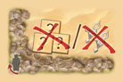
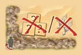

Tuareg - Reglamento del juego
Idea y Objetivo del Juego
Al contrario que otras culturas, los hombres tuareg del desierto llamados targui, se cubren la cabeza y el rostro mientras que las mujeres, llamadas targuia, no llevan velo alguno. El hogar pertenece a las mujeres
y son ellas las que mandan en las tiendas donde viven. Las diferentes familias se dividen en tribus, liderados por los nobles (imascheren en lengua tuareg). Los jugadores representan lideres de tribus tuareg que comercian
con mercancías (como dátiles, sal y pimienta) y consiguen monedas de oro y ventajas para así ampliar su tribu. En cada ronda aparecen nuevas ofertas. Las cartas de mercancías son el medio para conseguir las codiciadas cartas de
tribu. Estas cartas proporcionan durante el juego ventajas y puntos de victoria al final. El jugador con más puntos de victoria al final de la partida es el ganador. (Muchas de las reglas del juego original fueron optimizadas para esta versión web, por lo cual no será necesario realizarlas manualmente).
Contenido
80 Cartas de juego, de las cuales:
45 son cartas de Tribu
19 son de Mercancía
16 cartas de borde
30 Fichas de Mercancía (10 de cada una)
4 Marcadores de Tribu (2 Azul y 2 Blanco)
1 Ficha Jugador Inicial (Amuleto)
15 Fichas de Puntos de Victoria (Cruces de Plata 6x Valor de 1, 5x Valor de 3, y 4 valor 5)
Preparación
Las 16 cartas de borde se muestran sobre el tablero del juego, las cartas tienen numeración del 1 al 16, empezando de la carta "Nobles" en sentido horario hasta la última carta de "Asalto".
A continuación se explicará el efecto de cada carta
- Nobles: Al utilizar la carta "Nobles" el jugador puede comprar la carta de su mano y ponerla en su tablero si puede pagarla
- Obtienes x1 Dátil.
- Obtienes x1 Sal
- Primer Asalto: Paga una mercancía o un punto de victoria
- Comerciante: Paga 3 mercancías iguales por una moneda de oro o para dos mercancías iguales por otra mercancía.
- Obtienes x1 Pimienta
- Obtienes x1 Dátil
- Segundo Asalto: Paga 2 mercancías cualesquiera o paga un punto de victoria.
- Espejísmo: Puedes mover un marcador tuareg hacia otra carta del tablero central que esté disponible para usar esta en vez de la anterior.
- Orfebre: Puedes recibir puntos de victoria por: 2 mercancías iguales por un punto de victoria, una moneda de oro por un punto de victoria, cuatro mercancías iguales por 3 puntos de victoria, o dos monedas de oro por 4 puntos de victoria
- Obtienes x1 Pimienta
- Tercer Asalto: Paga 3 mercancías cualesquiera o 2 puntos de victoria.
- Caravana: Agarra la primera carta de arriba del mazo de cartas de mercancía y toma lo que se representa en ella: una o dos mercancías, una moneda de oro, o un punto de victoria.
- Expansión de Tribu: Agarra la primera carta del mazo de cartas de tribu, Puedes comprarla, ponerla en la mano o descartarla.
- Obtienes x1 Sal
- Cuarto Asalto: Paga una moneda de oro o tres puntos de victoria (Fin del Juego)
Desarrollo del Juego
1.- Mueve el asaltante un espacio adelante:
Al comienzo de cada ronda, mueva el Ladrón un espacio alrededor del campo de juego en el sentido de las agujas del reloj. En la primera ronda, el Ladrón se coloca en la carta "Noble". No se pueden colocar figuras de Tuareg en el mismo espacio
que el Ladrón. Cuando el Ladrón alcanza un espacio en la esquina, se produce un "asalto", durante el cual los jugadores perderán Mercancías o Puntos de Victoria y, más adelante en el juego, también Oro
2.- Colocar alternativamente las figuras Tuareg
Comenzando con el jugador inicial y alternándose, cada jugador coloca uan figura tuareg hasta que todas las figuras estén colocadas. Cada jugador ocupa tres casillas de borde que quiera utilizarlas durante esta ronda. No se permite colocar una figura
tuareg en las siguientes casillas:
- Sobre la casilla en la que se encuentra el asaltante
- Sobre la casilla de esquna "Asalto"
- Sobre una casilla ya ocupada por otro tuareg
- Sobre una casilla frente de una figura tuareg del jugador contrario
Por ejemplo El jugador azul comienza y coloca su primer Tuareg (1). Luego, el jugador blanco coloca su primer Tuareg en otro espacio. Él no puede colocar en el espacio indicado por una X blanca.
Luego el jugador azulcoloca su segundo Tuareg(2). No puede colocar en el espacio marcado con una X azul, frente al Tuareg del jugador blanco. Luego, el jugador blanco coloca su segundo Tuareg en el espacio opuesto al Ladrón. Se permite colocar un
Tuareg opuesto al Ladrón, pero no se permite colocarlo en el espacio del Ladrón.
Al final, todos los jugadores juegan sus tres figuras:
3.- Coloca los marcadores de Tribu en las intersecciones
Después de que cada jugador haya colocado sus tres figuras de Tuareg en el campo de juego, cada jugador coloca sus marcadores de tribu. Para hacerlo, cada jugador imagina una línea recta que se extiende desde cada una de sus figuras hasta el lado
opuesto del campo de juego. Cuando se cruzan dos líneas, el jugador coloca su marcador de tribu, en la mayoría de los casos habrá dos puntos de intersección y, por lo tanto, se colocarán dos marcadores como se muestra a continuación.
4. Ejecutando acciones
El jugador de Inicio comienza jugando todas las acciones permitidas por su marcador Tuareg y de tribu. Él tiene la libertad de decidir el orden en que se juega cada acción de las cartas ocupadas. Sin embargo, primero debe finalizar la acción desde
una carta antes de comenzar a ejecutar la acción desde la siguiente carta.Un jugador también puede elegir no llevar a cabo la acción en una carta en absoluto.Una vez que un jugador ha usado una carta de ventaja , él retira su figura de Tuareg
de la carta. La tarjeta en sí permanece donde está.Si se usa una carta en el área central , el jugador recupera su marcador de tribu. Esta carta es reemplazada inmediatamente por una carta del otro tipo: Si se ha utilizado una tarjeta de Mercancías,
se coloca en la pila de descartes para las cartas de Mercancías,se da vuelta una tarjeta de tribu y se coloca en el espacio desocupado. Si se usa una carta de tribu, se reemplaza con una tarjeta de mercancías.Nota: Si la baraja de cartas de
Mercancías está vacía, baraja la pila de descarte y cámbiala boca abajo como la nueva baraja.
Si en una carta se representan uno o dos recursos , por ejemplo, 1 de Oro o 1 cruz de Plata , el jugador recibe los tokens correspondientes. Si los tres Bienes están representados en la tarjeta con barras entre ellos, entonces el jugador puede
elegir recibir el Bien de su elección.Las cartas de tribu tomadas por el jugador se colocan sobre la mesa frente a él y el costo de las cartas pagadas en Mercancías y Oro (ver "Tarjetas de tribu"). Si un jugador no puede o no desea pagar una
carta de Tribu, en su lugar puede tomar la carta en su mano. Sin embargo, cada jugador solo puede tener una carta de Tribu en la mano. Si se extraen más cartas de tribu y no se juegan inmediatamente sobre la mesa, se deben descartar en una
pila de descarte para cartas de tribu. No está permitido intercambiar la tarjeta dibujada más recientemente por la que tiene en la mano.Una carta Tribal solo se puede jugar desde tu mano cuando colocas, en una ronda posterior, un Targi en
el espacio "Nobles". Entonces puede pagar el costo de la tarjeta de tribu para jugarla frente a usted. (Excepción: una de las cartas de tribu permite jugar con cartas de tribu desde la mano sin colocar una figura en el espacio "Nobles").Cuando
uses el espacio "nobles", puedes, en lugar de jugar la carta de tu mano, descartarla en la pila de descarte para dejar espacio para una carta "mejor".
5.- Entregue nuevas cartas de Mercancía y de Tribu y cambie el Jugador de inicio
Al final de la ronda, cuando ambos jugadores hayan ejecutado sus Acciones, todas las cartas de Mercancia y de Tribu en el área central del campo de juego se ponen boca arriba. El jugador de Inicio le da su ficha de jugador de Inicio al otro jugador,
que se convierte en el nuevo jugador de Inicio. La siguiente ronda comienza con el movimiento del Ladrón.
Otras reglas
Cartas de Tribu
El costo de las cartas de Tribu está ubicado en la esquina superiror derecha.
Los puntos de victoria que otorga están ubicados en la esquina inferior derecha
Cuando se compra una carta de Tribu se deberá realizar la acción correspondiente en el turno del jugador.
Tablero del Juego
Cada jugador tiene un tablero imaginario de 4 columnas por 3 filas en donde se colocarán las cartas de Tribu adquiridas. No es necesario que una fila finalice antes de iniciar la siguiente fila.
Las cartas deberán colocarse a un lado de una carta colocada previamente de lado izquierdo (Si es la primera carta a colocar, deberá colocarse en la primer columna, en la fila que se desee). Exceptuando una de las cartas de Tribu que te permite
intercambiar dos cartas jugadas.
Tipos de cartas de Tribu
Existen 5 tipos de cartas de Tribu: Camello, Tienda, Oasis, Tuareg y pozo (como se muestran en las imágenes de arriba)
Límite de Stock de Mercancías y oro al final de una ronda
Al final de la ronda, cada jugador tiene un límite de 10 mercancías totales y 2 monedas de oro. Si al terminar la ronda y al haber completado todas sus acciones un jugador tiene más de 10 mercancías y/o 3 monedas de oro, deberá devolver la cantidad
necesaria hasta volver a tener el límite de mercancías o cambiar mercancías en el orfebre o con el comerciante siempre y cuando se tenga una figura tuareg en dichas casillas.
Fin del Juego y Obtención de puntos
El juego se puede terminar de dos formas: Si la ficha del asaltante llega al cuarto asalto (12va Ronda), o Si uno de los jugadores llena su tablero de juego. Al final del juego los jugadores cuentan sus puntos de victoria obtenidos. Gana el jugador
con más puntos de victoria, en caso de empate el jugador con más oro gana, si el empate persiste, el jugador con más mercancías gana, en caso de que siga el empate, la partida se dará por empatada.
Puntos de Victoria
Se obtienen puntos de victoria de las siguientes maneras:
- 4 puntos por cada con todos los símbolos correspondientes
- 2 puntos por cada fila con 4 símbolos diferentes
- Puntos por mercancías u oro en el orfebre
- Punto de victoria adquirido en carta de Mercancía
- Puntos por cada carta Tribu en el tablero del jugador
- Puntos de victoria por efecto de cartas adquiridas
F.A.Q.
1.- ¿Puedo colocar dos de mis fichas Tuareg una frente la otra? ¿Si es posible, qué sucede?
Si, si un jugador ha colocado dos figuras Tuareg en espacios opuestos, solo habrá un punto de intersección y solo podrá colocar un marcador de tribu.
2.- ¿Que sucede cuando se tienen las dos cartas "No debes entregar nada en los Asaltos" y "En cada Asalto despúes de entregar lo exigido, obtienes un punto de victoria"?
No recibes puntos porque no entregas algo en los Asaltos.
3.- ¿Cómo funciona la carta “Después de poner la carta sobrela mesa, puedes desplazar 2 de tus cartas de Tribu cualesquiera”?
Permite cambiar de posición dos cartas, siempre que no se dejenespacios vacíos entre las cartas de cada fila luego del cambio.
4.-¿Cómo funciona la carta "Pon 1 moneda de oro de la reserva sobre esta carta. Cuando necesites pagar un oro para poner una carta de Tribu , utiliza esta moneda"?
El oro de esta carta no cuenta para el límite de oro deljugador. Este oro tampoco se puede utilizar para el orfebre o Asaltante, sólopara pagar esta carta de tribu.
5.- ¿Qué ocurre si no tengo 3 puntos de victoria ni oropara entregar en la carta 16 “Asalto” del borde?
En este caso, el contrario obtiene 3 puntos de victoriaadicionales.


 
